SUMMARY
This work relates to the design of hierarchical alarm management system for Honeywell’s Integrated Security Console. The primary task in this project was to design the hierarchical information architecture that matched the actual physical hierarchy of operations found in the customer environment. This hierarchy was then demonstrated in the design of alarm management module for the Integrated Security Console.
Hierarchical
information architecture
Alarm
Management System
The Security group at Honeywell Building Technologies (HBT) recently introduced an Integrated Security Console, which combines a diverse suite of security products in a single cohesive system that allows various organisations to monitor, action and report different security related incidents from a single system.
The Integrated Security Console caters to both small & medium businesses and large scale enterprises. This project focuses on Enterprise level integrated security solutions. More precisely,
Enterprise = Large scale, global organizations with multiple levels of operation and control
USERS & PROBLEM DEFINITION
The users were the security personnel at various levels in the customer organization. They were responsible for physical security, including:
The previous user research outlined 3 major personas:
Head of security
- Mainly looks at trends in alarms and other security incidents.
- Takes organization-level decisions accordingly.
- Needs to be aware of any high impact incident, related to both security as well as geo-political scenarios that can potentially impact the functioning of the organization as a whole.
Security Manager Design focus
- Needs to be aware of the security status of his area of responsibility at all points in time.
- Manages the operators in his area of responsibility.
- Can take operational actions on security related incidents, as well as direct operators to do so.
- Needs to generate, consume and communicate reports related to security incidents to peers and seniors.
Security Operator
- Takes action on alarms according to standard operating procedures.
- Receives direction from Security Manager and acts accordingly.
- Coordinates with other security operators to run ground level surveillance effectively.
- Usually comprises of people hired on an hourly wage basis and have limited exposure to overall security status.
The list of personas interacting with the system, in its entirety, is not limited to the ones mentioned here. However, in the current context, these three were the most active ones.
The current state of Honeywell’s security software suites is such that most of the information is presented to the user in a flat structure, which becomes exponentially harder to understand, consume and action as the size of the enterprise grows.
Moreover, this flat information structure lacks coherence with the users’ mental model. The users, security personnel of organizations in this case, think of operations in the form of same hierarchical structure that their organisation follows.
For example, if a company follows the hierarchy , the users tend to think of the operations at each level as follows:
DESIGN SOLUTION
There were 2 goals here:
Hierarchical
information architecture
For understanding the underlying hierarchy, we conducted various card sorting exercises, coupled with semi-structured interviews.
Alarm
Management System
For understanding alarm management, we consumed various generative research documents, as well as did a comparative analysis of existing Honeywell Security Products.
Based on the research, the following hierarchy was derived. For each level, we also defined the set of data required to carry out operations from our interface at each level.
Hover or tap a level to read its definition
Using this hierarchy, we designed the alarm management system. The design was governed by the following objectives:
Objectives
- High level information at a glance
- Quick access to all data & actions at each level
- Quick navigation between the levels
- Details on demand
- Highlighting priority data / actions
Along these objectives, I designed the system focusing on the Security Manager. In terms of information access and actions, the security manager persona presents a cross between the Head of Security and the Ground Level operator. Since this persona had multiple use cases similar to the other two, I decided to focus on the Security Manager for the current scope.
INTERACTIVE PROTOTYPE
Open prototype in a new tabDESIGN FEATURES & USER FLOWS
Security Manager is looking for an overview of regional view of alarms, particularly in North-East Region of USA.
Click on the screen below to interact with the design
Security Manager wants to analyze the alarm details for the West Building so that he can prioritize the alarms that need to be actioned first.
Click on the screen below to interact with the design
There is some construction going on Floors 1, 3 and 4 in West Building, because of which there are a lot of false alarms from those floors. He wants to Mute all the alarms coming from these floors.
Click on the screen below to interact with the design
The Security Manager wants to resolve all the alarms on Floor 2.
Click on the screen below to interact with the design
The Security Manager wants to view details of an alarm and take action on it: Resolving, Dismissing, Taking Over
Click on the screens below to interact with the design
PROCESS
My process started with establishing an understanding of the domain, the users, and what the problem was. For users, I specifically focused on what tasks they did and what information they needed to be successful at each task.
This was mainly done by walkthroughs of the previous generative research that the team had done, combined with product walkthroughs and evaluation of user flow.
We had 3 categories of users - C-Level Executives, Managers, and Security Operators. Given the time constraint, we decided to focus on Managers, who had an overlap in tasks with the other two personas. A manager was responsible for overseeing a group of operators, or managers under him, or taking action on higher priority tasks themselves.
Here is a mapping of Personas, their tasks, and their data needs:
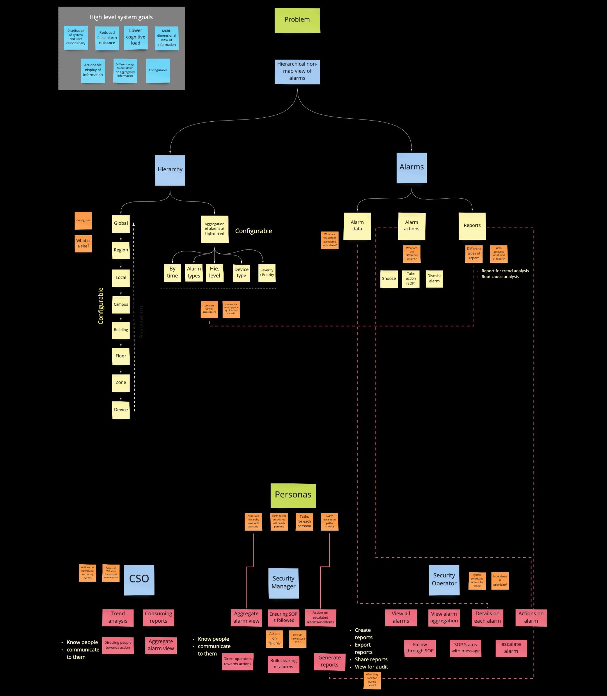
Next, based on this analysis, I extensively mapped out the use-cases for the persona. Each use case was broken down into the events that trigger it, the interface involved, the actions a user takes, and the open questions & assumptions.
- As a
- X
- I want to
- Y
- So that I can
- Z
- This is valuable when
- W
As a Security Manager
I need to see an aggregate view of alarms in my area of responsibility
So that I can identify major areas of problem
This is valuable when I can take actions on mitigating these problems
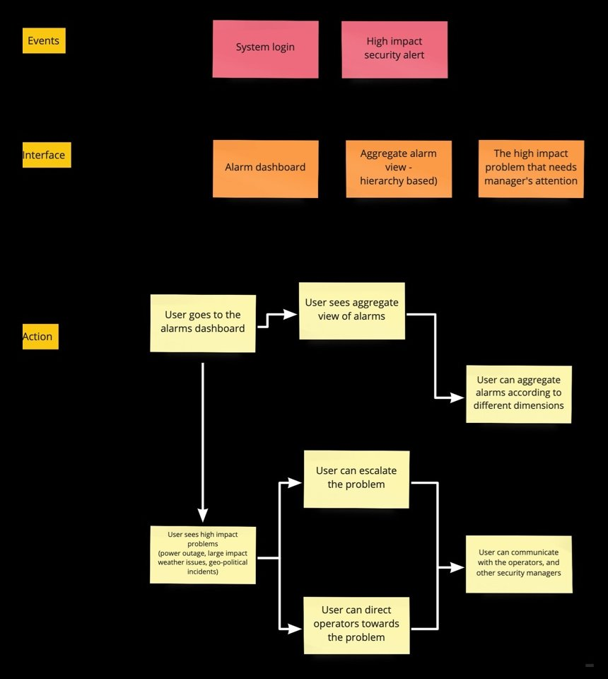
As a Security Manager
I need to ensure that SOPs are being followed
So that I can ensure compliance with regional and company policies
This is valuable when I can get complete incident report, along with information on actions taken by the operators
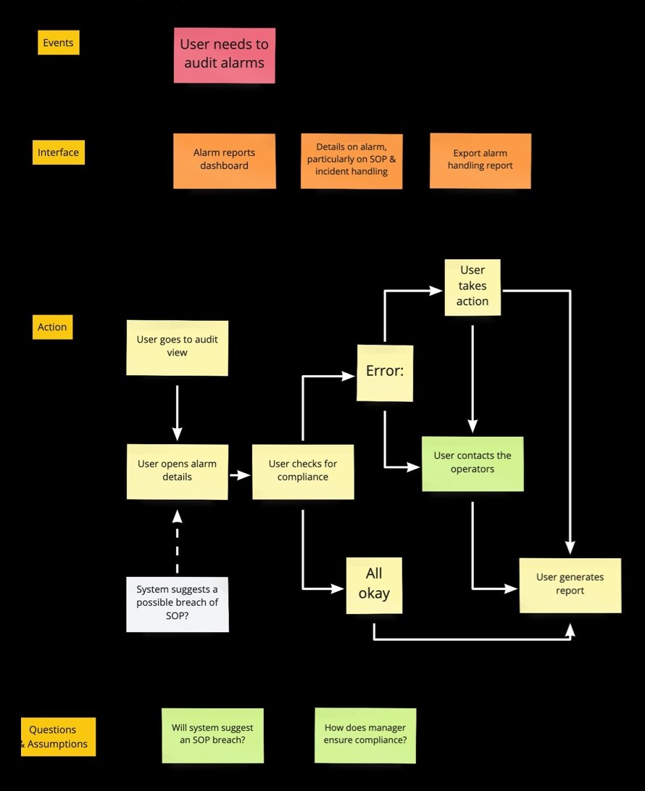
As a Security Manager
I need to generate reports of security events
So that I can review the current security status
This is valuable when I can customize the reports using parameters like time, alarm type, region etc.
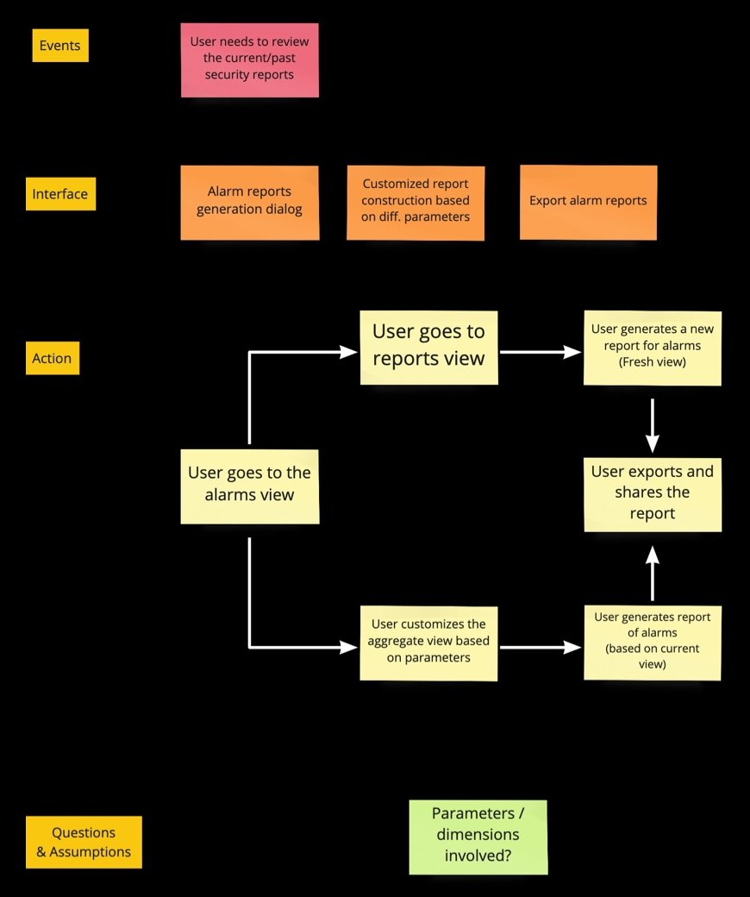
As a Security Manager
I need to be able to clear alarms in bulk for my site
So that I can reduce alarm nuisance
This is valuable when the operators on my site can be more productive
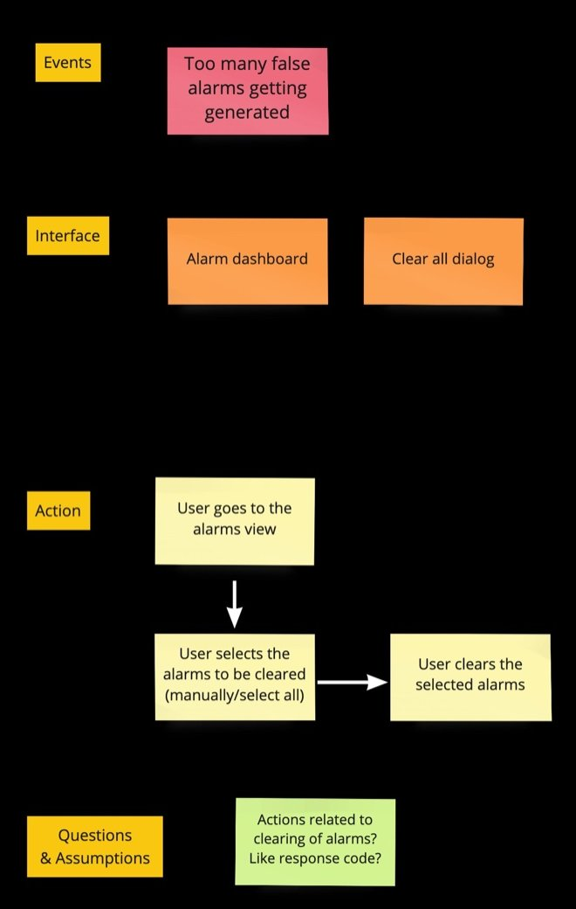
As a Security Manager
I need to know the operators associated with an alarm/incident
So that I can direct these operators towards taking actions
This is valuable when I can communicate with the relevant operators on my site
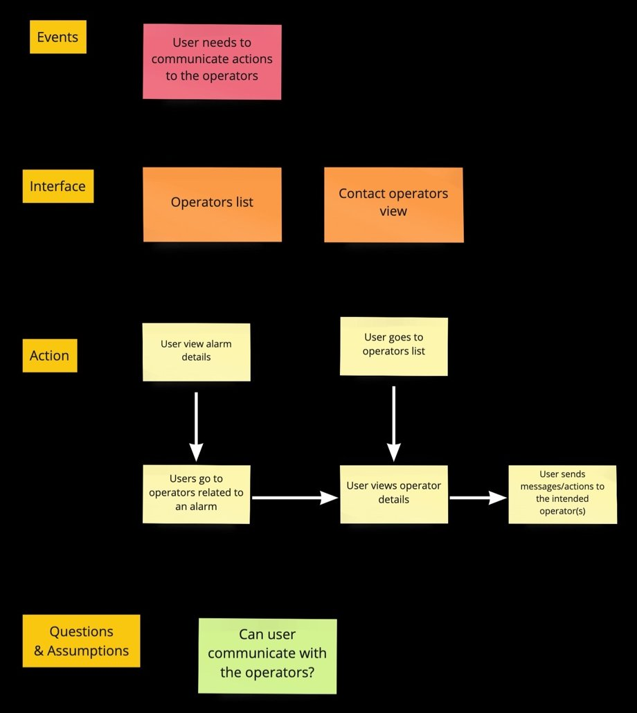
In the process, I discovered that there was a lack of coherence in the usage of terminologies. Some terms were used interchangeably (E.g., Alert, Alarm, Trigger, Event) in conversation - but meant quite different things to the user. When they were displayed information on the screen, this ambiguous terminology led to a little more delay in understanding the instructions.
For this, I designed and conducted a modified version of card sorting study to understand terminologies, definitions & features.
Grouping
Taxonomy
The study gave us the order and definition of each level of the hierarchy (shown in the Design Solution above), along with the data about alarms and system health needed at each level:
| Hierarchy | Definition | Alarm data | Health data |
|---|---|---|---|
| Global / World | Group of regions form the world. |
|
|
| Region | Group of sites form a region. One site is associated with one region. |
|
|
| Site | Group of buildings form a site. One building is associated with one site. |
|
|
| Building | Group of floors form a building. One floor is associated with one building. |
|
|
| Floor | Group of areas form a floor. One area is associated with one floor. |
|
|
| Area | Group of devices form an area. One device is associated with an area. |
|
|
| Device | Individual device. Alarms are associated with a device. |
|
|
| Alarm | Individual alarm. |
|
— |
Bringing the hierarchy, personas and use cases together, I mapped out the information architecture of the two main parts of the system: the Dashboard (alarm overview, high impact alarms, report generation) and the Alarm view (drilling down the hierarchy from campus to building, floor, zone and individual alarms). Each page is broken into its components, the data & features they hold, the actions available, and how they navigate to and associate with each other.
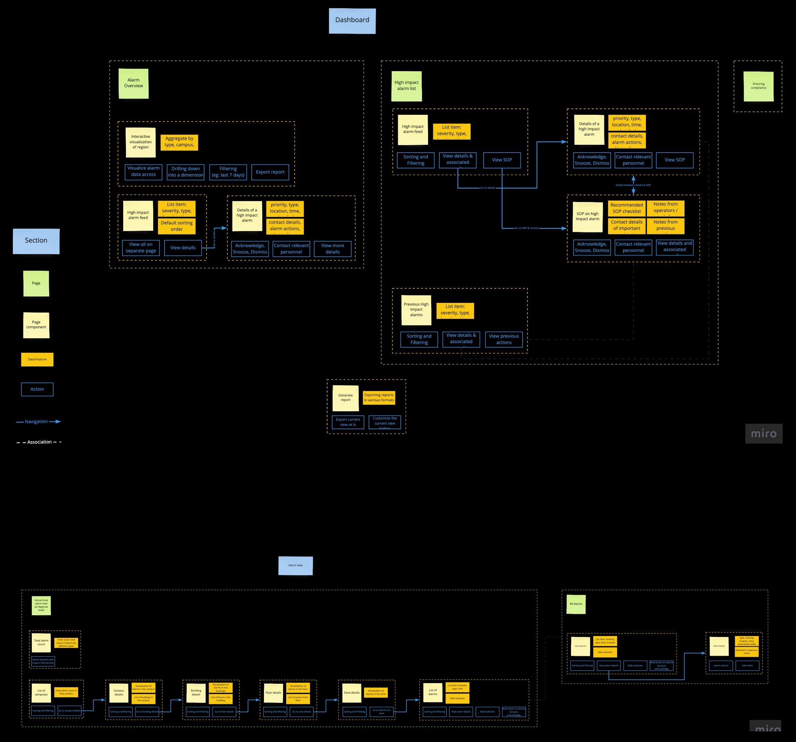
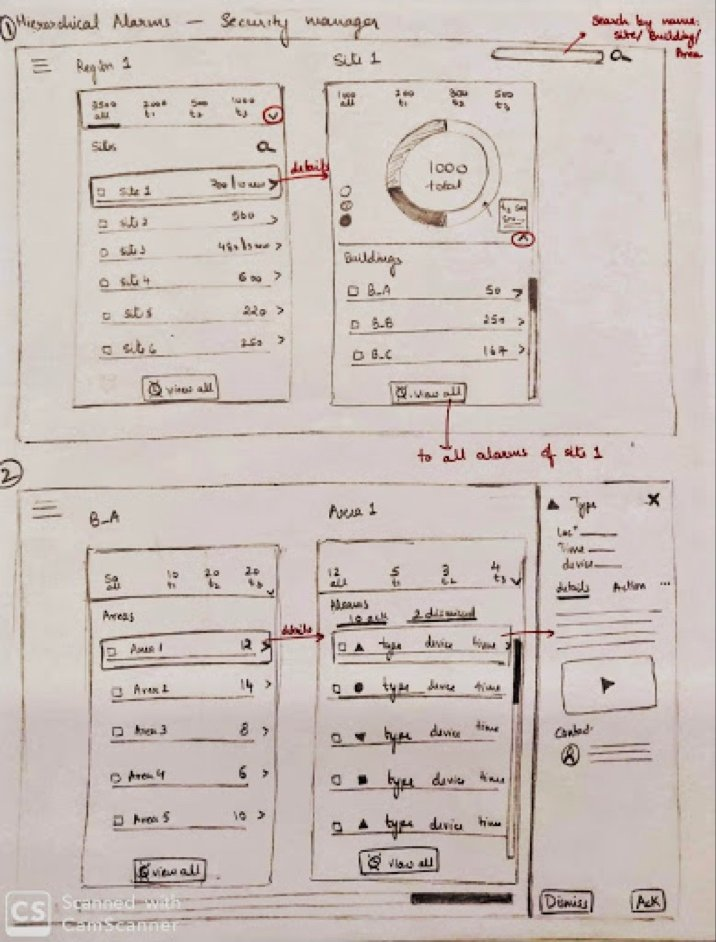
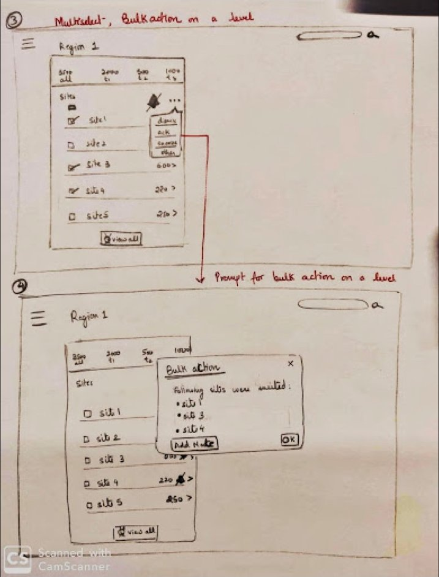
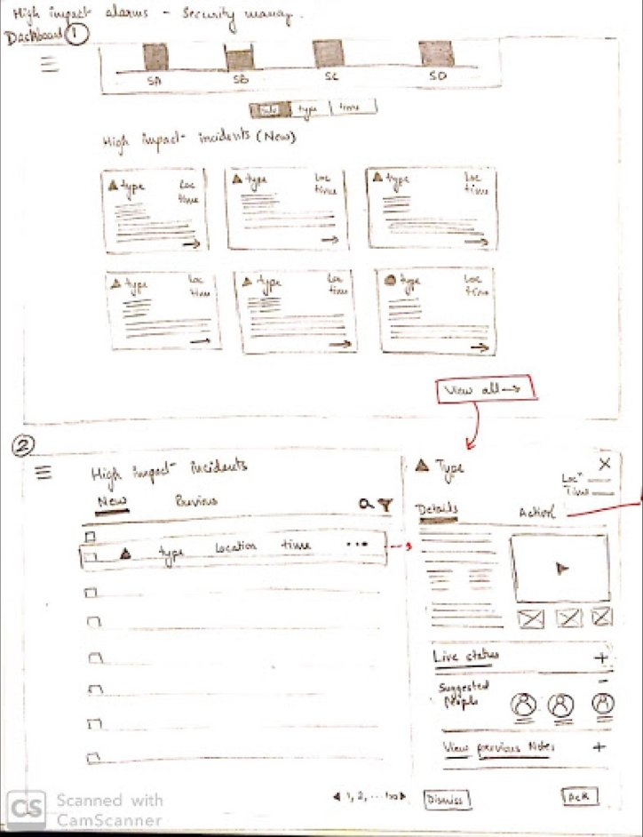
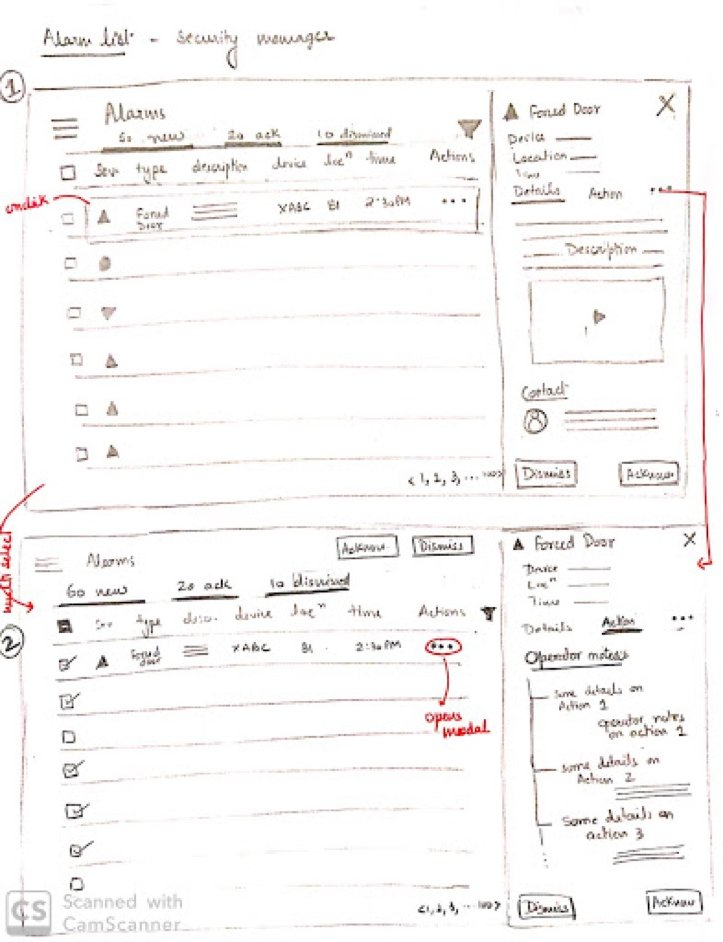
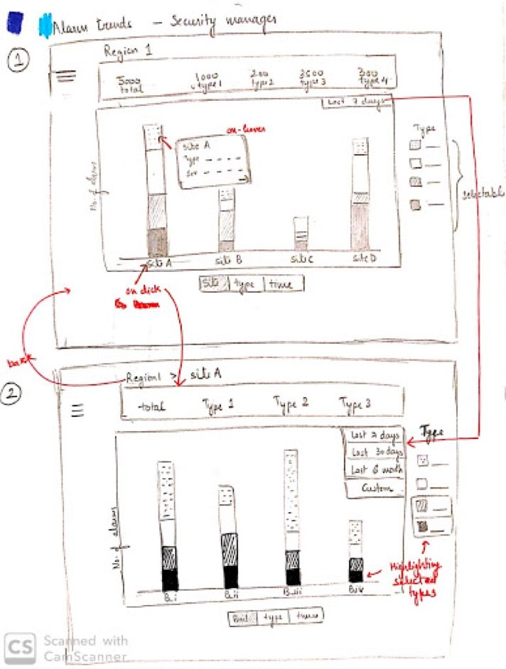